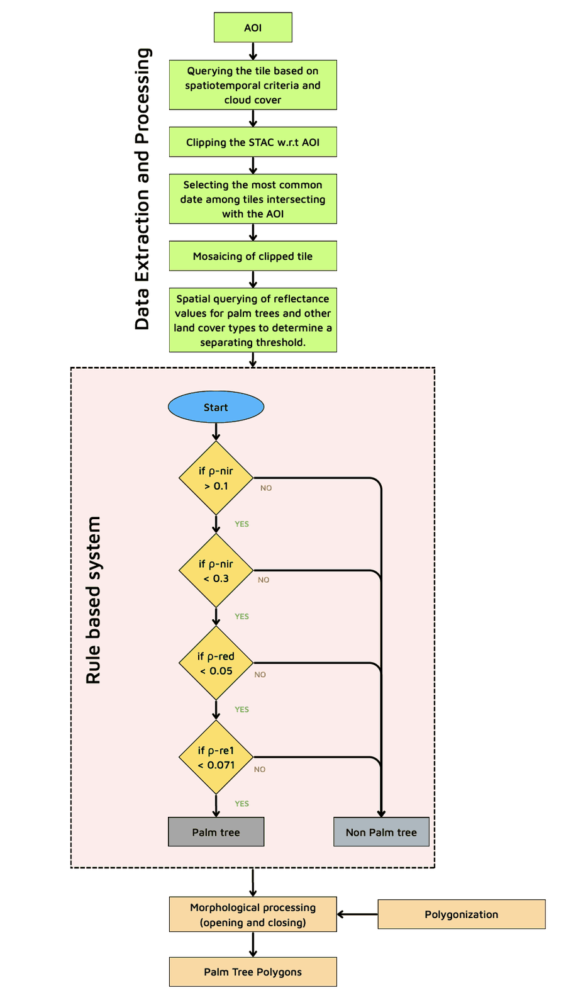
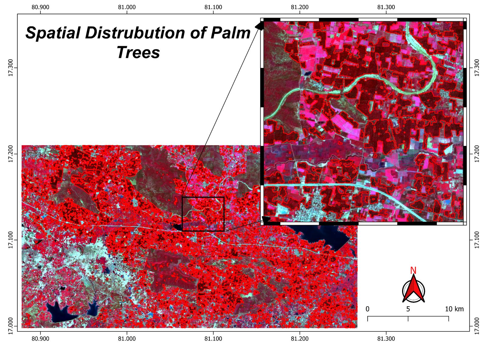

Classification · expert system
Palm Tree Classification and Area Estimation
Perennial tree crops defeat the usual seasonal cues that classifiers rely on. This study skips supervised learning entirely and separates palm canopy with four reflectance thresholds read directly off the spectral data.
- Role
- Sole analyst
- Sensor
- Sentinel-2 MSI
NIR · red · red edge 1 - Region
- Godavari basin, Andhra Pradesh
80.9°–81.35°E · 17.0°–17.3°N - Method
- Rule-based expert system
No training labels - Result
- 185 km² palm acreage
Vector polygons
The problem
Classifying palm and estimating its acreage from remote sensing is harder than it looks, and the difficulty comes from the crop being perennial rather than annual.
- Similar foreign spectra. Other land cover reflects close enough to palm to be pulled into the same class, which misclassifies pixels and inflates the acreage.
- Seasonal invariance. Annual crops announce themselves through a sowing-to-harvest reflectance curve. A perennial does not — its signal is broadly flat across the year, so the phenological separation that normally does the work simply is not there.
Why rule-based rather than supervised
A supervised model was the obvious alternative and was deliberately not used. Given the constraints, the expert system wins on every axis that mattered here:
- It can be built quickly from knowledge of the sensor's bands and spectral indices.
- It is lightweight and fast at inference — no model to train, serve or version.
- It needs no labelled data, which is the expensive part of the alternative.
Method
The system pairs visual image interpretation with the known behaviour of multispectral bands, then queries pixels spatially to find where palm separates from everything else. Those separation points become the thresholds.

The decision rule
A pixel is labelled palm only if it clears all four tests. The NIR band is bounded on both sides — vegetation has to be bright enough in the near infrared to be canopy at all, but not so bright that vigorous non-palm vegetation passes.
0.1 < ρnir < 0.3 ∧ ρred < 0.05 ∧ ρre1 < 0.071
All four conditions must hold. Any single failure sends the pixel to non-palm.
| Check | Threshold | What it separates |
|---|---|---|
| ρ-nir | > 0.1 | Rejects non-vegetated surfaces — water, bare soil and built-up, all of which sit low in the near infrared. |
| ρ-nir | < 0.3 | Caps the upper end, excluding the brightest and most vigorous non-palm vegetation. |
| ρ-red | < 0.05 | Enforces strong chlorophyll absorption in the red — dense, healthy canopy rather than sparse cover. |
| ρ-re1 | < 0.071 | The red edge does the discriminating work, cutting the look-alike vegetation that survived the first three tests. |
Post-processing
A per-pixel rule produces a speckled mask, so the raster is cleaned before it becomes geometry.
- Morphological opening and closing to remove isolated noise pixels and fill small holes inside otherwise solid canopy.
- Polygonization of the cleaned mask into vector polygons, ready for visualisation or further GIS analysis.
Results
The classified output maps the spatial distribution of palm across the study area, which totals 185 square kilometres of palm acreage. The inset shows the polygon boundaries against the false colour composite, where palm reads as the deep red canopy that the rule cascade isolates from the brighter magenta of surrounding cropland.
